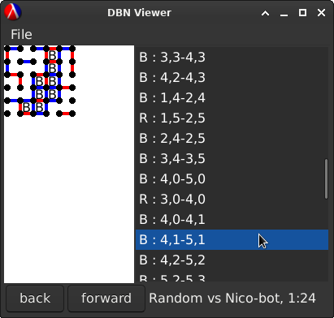
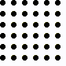
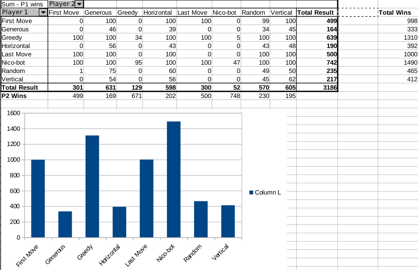

I simulated 6,400 bad AI Games of dots and boxes, and discovered nothing
Occasionally, I get a silly idea and then decide to make it. Most recently, I decided to create a bunch of bad AI and have them play the children's game "Dots and Boxes" against each other. Here's how that went.
Background
Dots and Boxes is a pen-and-paper strategy game that is usually played by children, or between children and parents during times when more interesting games are unavailable, like at school or while waiting for food at a family restaurant. If you're not familiar with the rules, they're very simple:
-
a grid of dots is drawn on a sheet of paper
-
players take turns connecting dots with lines. whenever a player's line encloses a box, they claim that box. (often by writing their first name initial in it)
-
the player with the most boxes claimed at the end wins.
Despite the game's simplicity, it has some emergent complexity and has been analysed by mathematicians and combinatorial game theorists who have come up with many interesting observations about strategic play. In this project I decided to ignore all of them and try and play dots and boxes in the worst possible ways.
This project was highly inspired by Dr. Tom Murphy VII's similar exploration of chess, which I have linked. You should watch it, because it's a lot better and more interesting than this. In fact, stop reading this right now and give Tom your time instead of me.
30 Weird Chess Algorithms: Elo World (by tom7)
Methodology
I implemented the game, all the player strategies and tools using the racket programming language, which I used for the first time. I quite like racket as a language for the creation of this kind of nonsense, because it has a large set of built in libraries for doing things that I find fun, like drawing graphics (which I also find very useful for debugging).
Games are saved in .DBN (Dots and Boxes Notation), an s-expression based format that I'm hoping will become a new standard for saving game records of dots and boxes similarly to what .PGN is for chess.
The core game implementation is uninteresting and we'll get to the players in a moment, but the part I think I'm happiest with is my little graphical viewer for .dbn files (gui.rkt in the source). racket/draw and racket/gui make building this kind of thing very easy and I love them, but it's still nice to look at something that looks like an actual program and think, I made this!

Running the actual tournament used the code in arena.rkt, playing 100 games between every possible pair of the 8 players leading to 6,400 overall games. Data was then exported in csv and ""analysed"" using a spreadsheet.
All the source is available here if you want it:
Tildegit page for dots and boxes
Let's meet the players!
For this project I built 8 bad AI strategy players:
- Random: plays purely random moves
- First Move: plays the first move on the grid, from left to right, top to bottom
- Last Move: plays the last move on the grid, from bottom to top, right to left
- Greedy: plays random moves, unless there is a box available to instantly claim, then claims it
- Generous: plays random moves, unless it can create a free box for the opponent, in which case it does so.
- Vertical: plays random moves, preferring vertical moves
- Horizontal: plays random moves, preferring horizontal moves
- Nico-bot: plays a basic strategy that seems to be somewhat canonical among children: play moves somewhat randomly, avoiding making spaces for your opponent to take a box, and then taking long chains of boxes once they appear. I called this Nico-bot because it plays about as well as I do.
Here are some .gif games between the different players, to illustrate their styles. The first player plays red (R) and the second player plays blue (B):


Results

After each player playing 100 games against each other player, I exported the results out of my program as a csv and plotted them as a graph and pivot table, seen above.
The best player by far was Nico-bot, taking 1490 wins compared to the closet rival, greedy, taking 1310. Horizontal and Vertical both perform worse than random, and I have no idea why. The worst player is generous, which makes sense, as Generous tries as much as possible to lose. A surprise is how well last- and first- move played. I think because they go methodically through the board they're likely to accidentally form a lot of boxes. That's basically it for my analysis of the results.
Sidenote: Pivot tables are awesome. I could just import a whole bunch of data into libreoffice and get a nice table. 10/10 would recommend.
All the results and every game log (in .dbn format) can be downloaded here:
Conclusion
In conclusion, playing dots and boxes the way a child plays it is better than playing it like a computer that has no idea how to play dots and boxes, which was already pretty obvious, when you think about it. To learn this, I learned a lot of other stuff: the racket programming language, building GUIs that don't totally suck, canvas drawing, inventing file formats, creating gifs with ffmpeg, and the awesomeness of pivot tables. If somebody wanted to actually learn about dots and boxes, it may be helpful to compare actually good strategies instead of bad ones.
I learned absolutely nothing about the game of dots and boxes. But that wasn't really the point, so I consider this a great success.